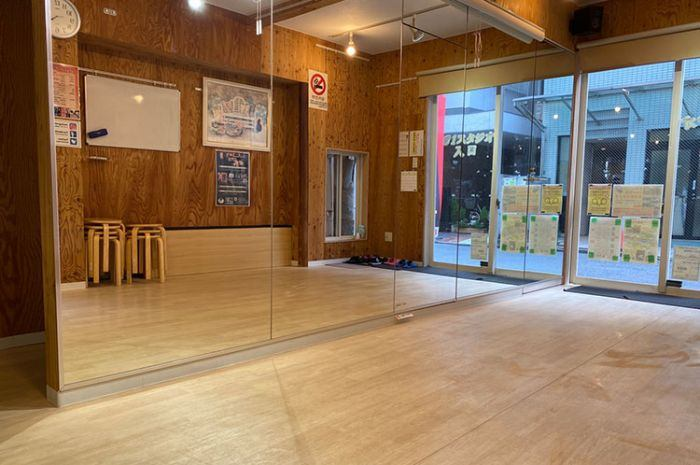
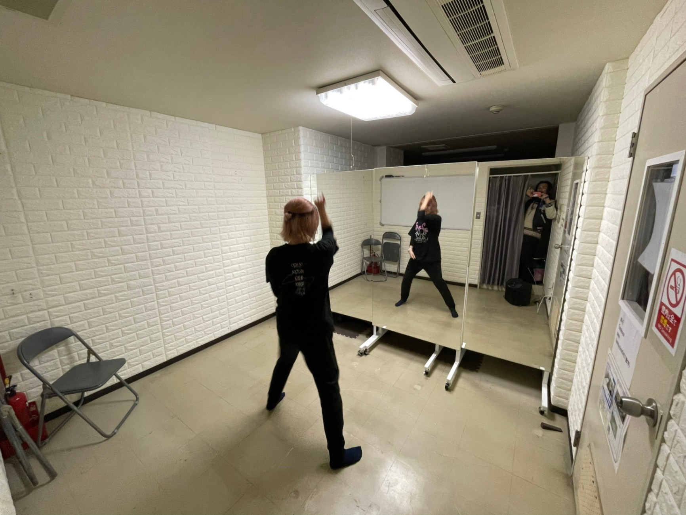
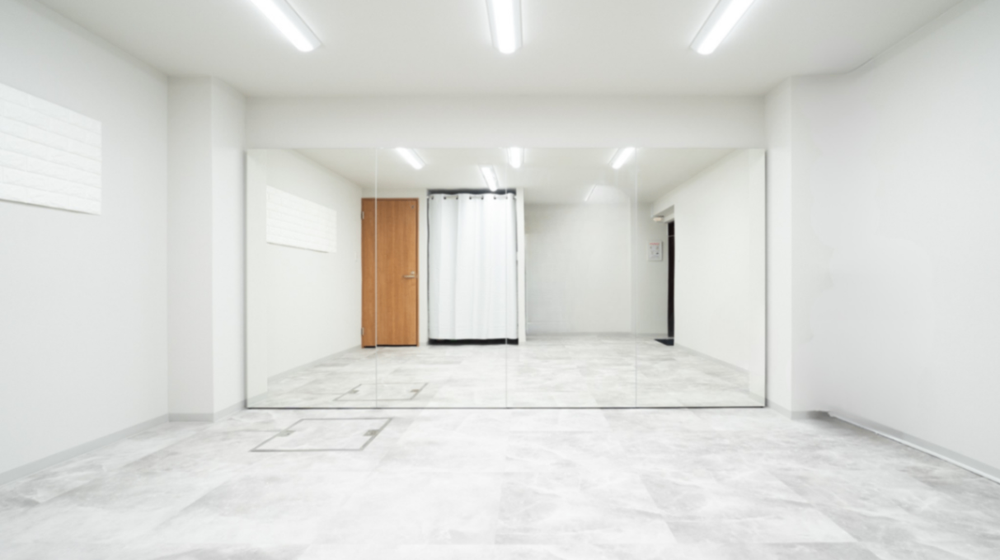
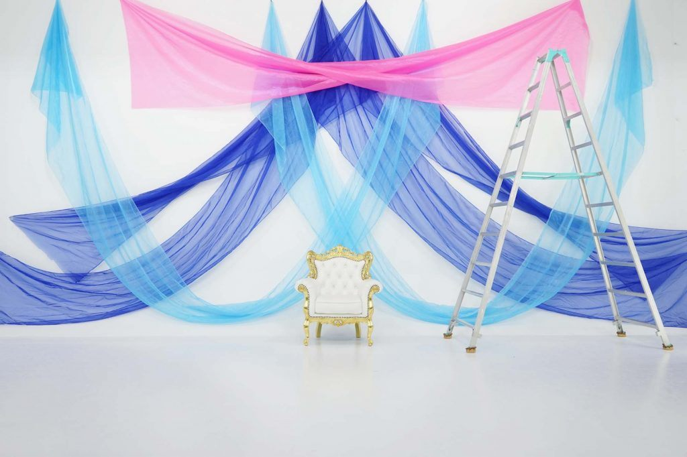

新宿駅のレンタルダンススタジオおすすめ
最終更新:

新宿駅周辺のレンタルダンススタジオを、駅からの距離・口コミ・設備でまとめました📸
個人練習・グループ練習・振付確認など用途に合わせて比較できます。提携スタジオはDSLからオンライン予約OK。空き状況や設備の詳細は各スタジオの公式ページでご確認ください💪
（中野富士見町駅・代々木駅・北参道駅・新大久保駅・新宿西口駅・西武新宿駅など、新宿駅から少し離れた駅のスタジオも含まれています。）
スタジオ比較表
| スタジオ名 | 最寄り駅 | 徒歩 | Google評価 | 口コミ数 | 施設タイプ | 個人練習 | グループ練習 | 詳細 |
|---|---|---|---|---|---|---|---|---|
| BUZZ レンタルスタジオ | 代々木駅 | 徒歩2分 | 5.0 | 1 | 多目的レンタル | ○ | ○ | 空き状況 |
| THビル貸し会議室 レンタルスタジオ | 新宿駅 | 徒歩6分 | 3.6 | 5 | 多目的レンタル | ○ | ○ | 空き状況 |
| レンタルスタジオAivic | 北参道駅 | 徒歩1分 | — | — | ピラティス・ヨガ兼用 | ○ | ○ | 空き状況 |
| Hina STUDIO | 新宿西口駅 | 徒歩2分 | — | — | 要確認 | ○ | ○ | 空き状況 |
| Studio-Bio | 北参道駅 | 徒歩1分 | — | — | 要確認 | ○ | ○ | 空き状況 |
| なかすた | 中野富士見町駅 | 徒歩3分 | — | — | 要確認 | ○ | ○ | 空き状況 |
| Dubwayレンタルスタジオ | 新大久保駅 | 徒歩9分 | — | — | 多目的レンタル | ○ | ○ | 空き状況 |
| Ｍ＆Ｓダンススタジオ | 代々木駅 | 徒歩5分 | 5.0 | 1 | ダンス主用途 | ○ | ○ | 公式サイト |
| ソニズダンスタジオ | 西武新宿駅 | 徒歩5分 | 4.7 | 3 | 多目的レンタル | ○ | ○ | 公式サイト |
| LANDstudio | 新大久保駅 | 徒歩4分 | 5.0 | 3 | ダンス主用途 | ○ | ○ | 詳細 |
| 新宿 だんすた レンタルスタジオ | 西武新宿駅 | 徒歩5分 | 4.4 | 12 | 多目的レンタル | ○ | ○ | 公式サイト |
| Beat Box Dance Studio | 代々木駅 | 徒歩3分 | 3.8 | 4 | ダンス主用途 | ○ | ○ | 公式サイト |
1. BUZZ レンタルスタジオ（4店舗）
多目的レンタル西武新宿駅から徒歩3分の好立地に位置するレンタルスタジオです。初めての利用でも入りやすい雰囲気が好評で、リピート利用を検討するユーザーからの信頼を獲得しています！
ダンスやレッスンなど、様々な用途での利用が可能です。
- BUZZ レンタルスタジオ 新宿ハウス店 西武新宿駅 徒歩4分 地図 空き状況を確認する
- BUZZ新宿 西武新宿駅 徒歩4分 地図 空き状況を確認する
- BUZZ レンタルスタジオ新宿4丁目店 新宿駅 徒歩5分 地図
- BUZZ レンタルスタジオ 代々木店 代々木駅 徒歩2分 地図
📸 スマホ三脚が無料で借りられます📸 セルフ撮影や練習動画のチェックをしたいときに便利ですよ。
2. THビル貸し会議室 レンタルスタジオ
多目的レンタル
| 住所 | 〒151-0053 東京都渋谷区代々木２丁目４-１ Thビル 地図 |
|---|---|
| アクセス | 新宿駅 徒歩6分 |
| 営業時間 | 毎日 24時間営業 |
| 電話番号 | 090-2558-7140 |
| 公式サイト | 公式サイト |
新宿駅から徒歩6分という好立地にあるレンタルスタジオで、イベントリハーサルや本番に必要な十分なスペースを備えています。利用者からは使い心地の良さが評判で、各種イベントや練習に最適な環境として親しまれています。
📸 天井が高いスタジオは動画映えしやすい📷 アクロバット系の動きもフレームに収まりやすいですね。
3. レンタルスタジオAivic（4店舗）
ピラティス・ヨガ兼用北参道駅30秒マシンピラティススタジオ自然光が入る1日1回スタッフ完全清掃のスタジオ。1室完備のレンタルダンスルーム、広さ約28㎡、2面ミラー設置。
無料Wi-Fi完備、エアコン完備。更衣室・トイレ・自然光の入る窓完備。
撮影向きルーム・三脚無料レンタルあり。
- レンタルピラティススタジオAivic北参道 北参道駅 徒歩1分 地図 空き状況を確認する
- レンタルピラティススタジオAivic新宿 東新宿駅 徒歩5分 地図 空き状況を確認する
- レンタルスタジオAivic高田馬場 高田馬場駅 徒歩4分 地図 空き状況を確認する
- レンタルピラティススタジオAivic西新宿 西武新宿駅 徒歩5分 地図 空き状況を確認する
📸 撮影向けで自然光も入るルームがあります📸 昼間の撮影なら窓からの光が映像をきれいに見せてくれますよ。
4. Hina STUDIO（2店舗）
要確認大きな鏡の広々ダンス、バレエ、ヨガ、撮影等、用途によって使える、大小２つのかわいいスタジオ。2室のダンスルームを完備、広さ25〜74㎡、ミラー設置、リノリウム床。
Bluetoothスピーカー完備、無料Wi-Fi完備、エアコン完備。更衣室・トイレ・バレエバー完備。
撮影向きルーム・三脚無料レンタル・360°VRビュー対応あり。
- Hina STUDIO(ヒナスタジオ)【新宿西口アネックス】 西武新宿駅 徒歩3分 地図 空き状況を確認する
- Hina STUDIO(ヒナスタジオ)【新宿西口スタジオ】 新宿西口駅 徒歩2分 地図 空き状況を確認する
📸 撮影向けで最大74㎡の広さがあります📸 引いたカメラポジションが取りやすくてフレームに余裕ができますよ。
5. Studio-Bio
要確認
| 住所 | 東京都渋谷区千駄ヶ谷3−41−12 シャトル千駄ヶ谷B1(地下) 地図 |
|---|---|
| アクセス | 北参道駅 徒歩1分 |
| 公式サイト | 公式サイト |
2026年3月14日オープンリノベ済北参道駅1分 少人数ダンス・ヨガに最適 明るく清潔な可愛いスタジオ！1室完備のレンタルダンスルーム、広さ約15㎡、ミラー設置、フローリング床。
Bluetoothスピーカー完備、無料Wi-Fi完備、エアコン完備。更衣室・トイレ完備。
撮影向きルーム・三脚無料レンタルあり。
📸 撮影向けルームがあります📸 照明や背景の環境もルームページで確認してから使うといいですよ。
6. なかすた
要確認
| 住所 | 〒164-0013 東京都中野区弥生町５丁目２２-２ ビラフジミ B号室 地図 |
|---|---|
| アクセス | 中野富士見町駅 徒歩3分 |
| 公式サイト | 公式サイト |
撮影専用スタジオです。大きなシロホリとクロホリの両方が使えます。
1室完備のレンタルダンスルーム、広さ約140㎡。Bluetoothスピーカー完備、無料Wi-Fi完備、エアコン完備。
更衣室・トイレ完備。撮影向きルーム・照明機材有料レンタル・三脚無料レンタルあり。
📸 照明機材付きの撮影向けルームは贅沢📷 ライティングを工夫するだけで映像の質がぐっと上がります。
7. Dubwayレンタルスタジオ
多目的レンタル| 住所 | 東京都新宿区百人町3-15-8 地図 |
|---|---|
| アクセス | 新大久保駅 徒歩9分 |
防音インスタ映えおしゃれなダンススダジオ。1室完備のレンタルダンスルーム、広さ約25㎡、リノリウム床。
ダンス練習に使えるかどうかは、鏡・床材・広さを確認してから判断しましょう。
📸 リノリウム床は動きが映えやすいのでカメラマン目線でもおすすめできます📷 足元の質感が映像に出やすいですね。
8. Ｍ＆Ｓダンススタジオ
ダンス主用途| 住所 | 〒151-0051 東京都渋谷区千駄ケ谷５丁目１１-１３ 俳協ビル B1 地図 |
|---|---|
| アクセス | 代々木駅 徒歩5分 |
| 営業時間 | 月・火: 10:00〜22:30 / 水: 10:00〜22:40 / 木: 10:00〜22:30 / 金: 10:00〜22:15 / 土: 10:00〜22:40 / 日: 10:00〜21:00 |
| 電話番号 | 03-3350-5350 |
| 公式サイト | 公式サイト |
渋谷エリアに位置し、代々木駅から徒歩5分のレンタルダンススタジオです。Google評価5.0点と安定した評価のスタジオです。
公式サイトから空き状況の確認・予約が可能です。空き状況や設備の詳細は公式サイトでご確認ください。
📸 ダンス向けに設計されたスタジオです✨ 鏡の大きさと照明環境を事前に確認してから予約を！
9. ソニズダンスタジオ
多目的レンタル| 住所 | 〒160-0023 東京都新宿区西新宿７丁目２２-３１ 柏木 MURA B1F 地図 |
|---|---|
| アクセス | 西武新宿駅 徒歩5分 |
| 営業時間 | 毎日 6:00〜23:00 |
| 公式サイト | 公式サイト |
西武新宿駅徒歩5分に構えるスタジオです。ダンスにも対応するレンタルスタジオです。
床材や広さはダンスの内容によって適否が変わるため、予約前に確認しておくとよいでしょう。少数ながら利用者の声も確認でき、公式情報とあわせて検討しやすい候補です。
📸 多目的スタジオなので、ダンス用途での使い勝手は事前確認が大事🔍 鏡と床材をチェックしてみてください！
10. LANDstudio
ダンス主用途| 住所 | 〒169-0073 東京都新宿区百人町１丁目２２-１９ 筒井ビル B1F 地図 |
|---|---|
| アクセス | 新大久保駅 徒歩4分 |
| 営業時間 | 月〜水: 24時間 / 金〜日: 24時間 |
レンタルダンススタジオ LANDstudio 新宿店は、新大久保駅から徒歩3分という好立地にある美しいスタジオです。楽器も利用できるプライベート空間として、ダンスの練習から音楽制作まで幅広く活用できます。
新宿エリアで質の高い施設をお探しの方に最適です。
📸 練習用途にしっかり対応しているスタジオですね。振付確認にも使いやすそう📷
11. 新宿 だんすた レンタルスタジオ
多目的レンタル| 住所 | 〒160-0023 東京都新宿区西新宿７丁目１３-７ 3F4F タカラビル 地図 |
|---|---|
| アクセス | 西武新宿駅 徒歩5分 |
| 営業時間 | 毎日 24時間営業 |
| 電話番号 | 03-5822-4050 |
| 公式サイト | 公式サイト |
西武新宿駅徒歩5分に構えるスタジオです。レンタルスタジオとして運営されており、ダンス練習での利用実績もあります。
床材や広さ、利用ルールについては事前に確認することをおすすめします！口コミ12件の評価が参考になります。
📸 多目的スタジオなので、ダンス用途での使い勝手は事前確認が大事🔍 鏡と床材をチェックしてみてください！
12. Beat Box Dance Studio
ダンス主用途| 住所 | 〒151-0053 東京都渋谷区代々木１丁目４２-２ 地図 |
|---|---|
| アクセス | 代々木駅 徒歩3分 |
| 営業時間 | 月〜金: 17:00〜23:00 / 土: 13:00〜23:00 / 日: 13:00〜21:30 |
| 電話番号 | 03-5388-6774 |
| 公式サイト | 公式サイト |
渋谷エリアに位置し、代々木駅から徒歩3分のレンタルダンススタジオです。公式サイトから空き状況の確認・予約が可能です。
設備や予約条件は公式サイトで確認しておくと安心です。
📸 ダンス向けに設計されたスタジオです✨ 鏡の大きさと照明環境を事前に確認してから予約を！
新宿駅でレンタルダンススタジオを選ぶポイント
- 駅からの距離：練習後の移動も考えると、駅から徒歩5分以内が使いやすいです。最寄り駅ごとにスタジオ数が変わるため、集合しやすい駅を基準に選ぶのがおすすめです。
- 床材の確認：ダンス練習にはフローリングやリノリウム床が向いています。カーペット床はターンやスライドに不向きな場合があるため、予約前に確認しておきましょう。
- 鏡の有無・サイズ：振付確認には全身が映る大きな鏡が便利です。鏡の枚数や配置は公式サイトの写真で事前に確認できることが多いです。
- 部屋の広さ：個人練習なら10〜20㎡程度、グループ練習には30㎡以上が目安です。人数に合わせた広さを確認しておきましょう。
- 音響設備：Bluetooth対応スピーカーや音楽再生環境が整っているか確認しましょう。持ち込み可否についても確認しておくと安心です。
- 予約のしやすさ：オンライン予約・直前予約への対応、キャンセルポリシーも事前に確認しておくと利用しやすくなります。
エリア・駅別の特徴
| エリア（駅） | 特徴 |
|---|---|
| 代々木駅周辺 | 掲載3スタジオ。チェーン1・個人2の混在。最短148mと駅直近。平均★4.6と高評価。DSL提携1スタジオあり。 |
| 北参道駅周辺 | 掲載2スタジオ。チェーン1・個人1の混在。最短36mと駅直近。DSL提携2スタジオあり。 |
| 新大久保駅周辺 | 掲載2スタジオ。個人・独立系スタジオのみ。最短276mと駅直近。平均★5.0と高評価。DSL提携1スタジオあり。 |
| 西武新宿駅周辺 | 掲載2スタジオ。個人・独立系スタジオのみ。平均386mと駅近。平均★4.6と高評価。 |
| 新宿駅周辺 | 掲載1スタジオ。個人・独立系スタジオのみ。平均451mと駅近。平均★3.6。DSL提携1スタジオあり。 |
| 新宿西口駅周辺 | 掲載1スタジオ。チェーン系が中心。最短136mと駅直近。DSL提携1スタジオあり。 |
| 中野富士見町駅周辺 | 掲載1スタジオ。個人・独立系スタジオのみ。最短163mと駅直近。DSL提携1スタジオあり。 |
個人練習・グループ練習で確認すべき設備
個人練習の場合
- 全身が映る鏡（フォームや振付を確認できるサイズ）
- 音楽再生環境（スピーカー・Bluetooth接続など）
- 1時間単位で予約できる柔軟な料金体系
- 荷物を置けるスペースや更衣室の有無
グループ練習の場合
- 4〜10人が動ける広さ（30㎡以上が目安）
- フォーメーション確認しやすい鏡の配置
- スピーカーの音量が十分であること
- 複数時間まとめて予約できる料金プランの有無
- 着替えスペース・荷物置き場の確保
よくある質問
まとめ
新宿駅エリアには、BUZZ レンタルスタジオ、THビル貸し会議室 レンタルスタジオ、レンタルスタジオAivicなどのレンタルダンススタジオがあります。いずれも駅から近い立地にあり、個人練習・グループ練習・振付確認など幅広い用途に使えます。
気になるスタジオがあれば、空き状況や設備条件を確認しながら練習スタイルに合う場所を選んでみてください💪 鏡の有無・床の種類・部屋の広さなど、用途に合わせた条件で比較するのが選びやすいですよ！
— だん（Dance Cover Lab）📸
この記事について
この記事はだん（Dance Cover Lab・ダンス専門カメラマン・28歳）が執筆・監修しています。撮影現場でのスタジオ選びの経験をもとに、鏡・床材・光環境などカメラマン目線の情報をシェアしています📸
- 掲載スタジオはGoogle口コミ評価・駅からの距離・ダンス利用実績をもとに選定しています。
- 営業時間・電話番号は公式情報をもとに記載していますが変更されることがあります。最新情報は公式サイトをご確認ください。
- DSL提携スタジオはオンライン即時予約が可能です。